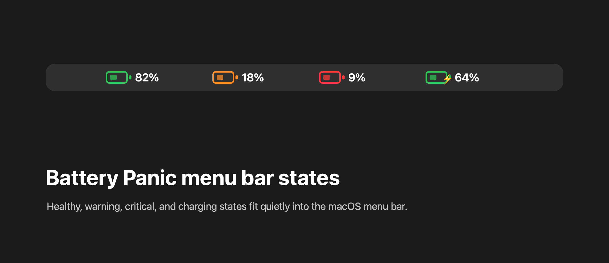
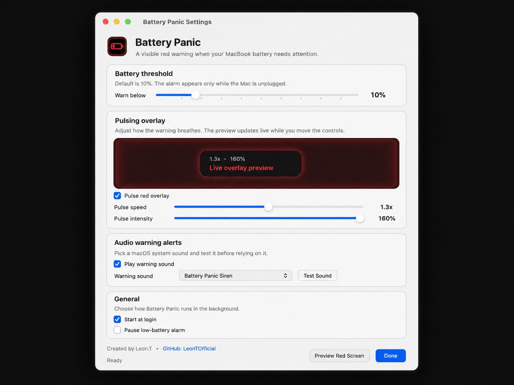
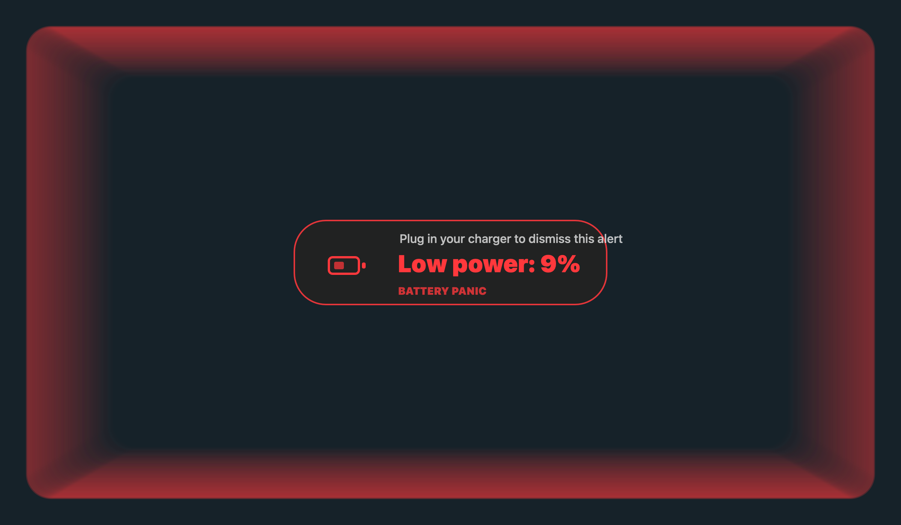

Red low-battery overlay
A full-screen red pulse appears at your chosen low-battery percentage while your Mac is unplugged.
Visible battery alerts for macOS. Get a red pulsing screen warning before your MacBook dies, a calm charging reminder when it reaches your chosen level, and a menu bar battery state that is easy to read at a glance.

What it does
Battery Panic stays quiet in the background until your MacBook battery needs attention. Then it becomes visible enough to save your work before the screen goes black.
A full-screen red pulse appears at your chosen low-battery percentage while your Mac is unplugged.
At 2% or below, Battery Panic switches to stronger critical wording, glow, and urgency.
A short green-blue reminder can appear once per charging session when your Mac reaches your chosen charging level.
Healthy, warning, critical, and charging states use clear colors and percentage text in the macOS menu bar.
Designed for quick control


Hard to miss, easy to dismiss
Download and install
Use the DMG for the normal drag-and-drop install. Battery Panic is open source and locally signed, so macOS may ask you to allow it in Privacy & Security on first launch.
Privacy and updates
Battery Panic reads battery status through macOS power APIs. The alarm itself does not need an account, cloud service, analytics, or tracking.
No telemetry, no analytics, no account, and no private user data collection.
Sparkle can check GitHub for updates when you use the update menu item.
The project is available on GitHub so users can inspect how the app works.